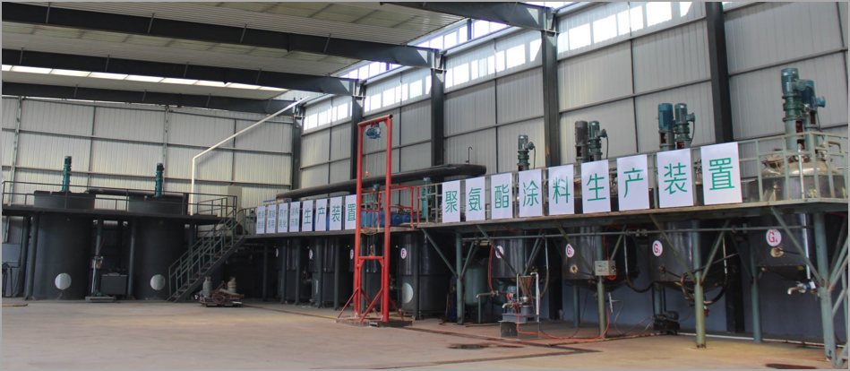
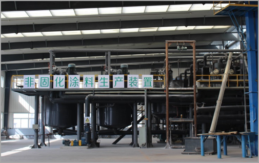

当前位置：
当前位置：
1）单组分聚氨酯
反应设备：反应釜（可升降温、搅拌）。
反应原料：聚醚、MDI及多种助剂。
负压设备：真空泵。
本工艺是将组合聚醚、增塑剂、增强剂、颜料、填料等按一定配比加入反应釜中后，然后升温到一定温度，在指定温度下抽真空，计时2.5小时，降温，关闭真空。继续降温到一定温度后加入MDI，升温到反应2h后，接着降温，加入有机锡、溶剂油、防沉剂，搅拌一定时间后在一定温度下出料。
2）双组分聚氨酯
反应设备：反应釜（可升降温、搅拌）。
反应原料：聚醚、MDI及多种助剂。
负压设备：真空泵。
1）A组分
本工艺是用真空将聚醚、增塑剂吸入反应釜，开动搅拌、开电加热，搅拌一段时间分钟后开始向反应釜滴加MDI，MDI应在反应釜到达一定温度之前滴加完毕，然后升温，在一定温度下保温，一段时间后开冷却水降温，抽真空，然后停止搅拌，放掉反应釜真空，取样化验-NCO%值，若合格即可放料装桶。
2）B组分
先将PU树脂等依次加入反应釜内，充分搅拌均匀，然后依次加入重钙、颜料等各种助剂，搅拌至无结块后，经胶体磨研磨到一定细度，再打到反应釜中，搅拌均匀后出料装桶。

3）DSR喷涂橡胶沥青防水涂料
①制备沥青：将液体沥青加入沥青储存搅拌罐中，加热升温到规定的温度后，备用；
②制备乳化剂：将去离子水打入乳化剂搅拌罐中，加温到规定的温度后，按要求加入乳化剂、稳定剂，并调节PH值，备用；
③先开启乳化剂泵，然后开启胶体磨研磨乳化，再开启沥青泵，按配比要求调节沥青和乳化剂的流量，进行乳化；
④乳化后的沥青放入乳化沥青搅拌罐中；
⑤按要求向乳化沥青搅拌罐中加入橡胶乳液，进行改性；
⑥检测合格后，放料包装。
4）DNC非固化橡胶沥青防水涂料

①首先将沥青和各种增塑剂加入搅拌罐中开始升温搅拌；
②升温到规定温度时，分别向搅拌罐中加橡胶1和树脂；
③保持恒温3小时，保证橡胶粉和树脂全部溶化；
④加入非固化助剂和橡胶2；
⑥高速搅拌1小时，并通过胶体磨研磨；
⑦再加入填料；
⑧潮湿基面使用时，可加入潮湿基面助剂。
⑨取样检测合格后，放料包装。
5)聚合物乳液建筑防水涂料
产品介绍：建筑防水涂料是在常温下呈无固定形状的粘稠状液态高分子合成材料，经涂布后，通过溶剂的挥发或水分的蒸发或反应固化后在基层表面可形成坚韧的防水涂膜的材料的总称。
原材料：乳液，填料，助剂，水
6)水泥基渗透结晶型防水涂料
产品介绍：水泥基渗透结晶型防水涂料是以特种水泥、石英砂等为基料，渗入多种活性化学物质制成的粉状刚性防水材料。与水作用后，材料中含有的活性化学物质通过载体水向混凝土内部渗透，在混凝土中形成不溶于水的结晶体，堵塞毛细孔道，从而使混凝土致密、防水。产品适用于工业与民用建筑的地下工程、地铁及涵洞、水池、水利等工程混凝土结构的防水与防护。
原材料：特种水泥、渗透结晶活性母料、石英砂